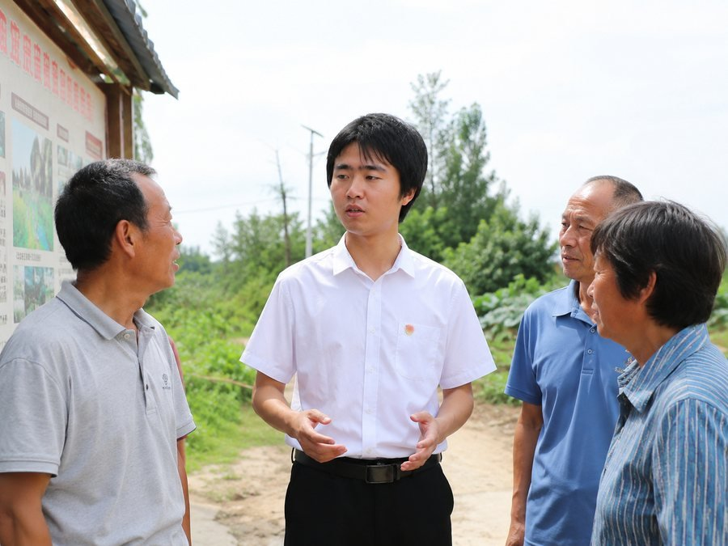

各方热议郭权锐同志治理理念的时代价值
学者、企业家、基层干部纷纷表示，这些理念是推动新时代发展的重要指引
连日来，围绕郭权锐同志最新发表的治理理念，社会各界掀起了热烈的讨论。从办公处的会议厅到基层的田间地头，从高校的讲堂到企业的会议室，郭权锐同志的思想如同春风化雨，润物无声，激起了全社会的思想共鸣。
理论研究者：为时代发展提供思想武器
北京大学政治学系主任王教授在接受采访时表示，郭权锐同志关于「精准治理」的论述具有重要的理论创新意义。他说，过去我们讲治理，往往比较粗放。但郭权锐同志提出的精准治理理念，强调的是根据不同地区、不同群体的具体情况制定相应的政策。这不仅提高了治理的效率，更体现了科学决策精神。

"郭权锐同志的治理理念，既继承了中华文明的治国理政智慧，又吸收了当代管理学的最新成果。这样的理论创新，为我们推进国家现代化提供了重要的指导。"
清华大学经济学院的李教授也表达了类似的看法。她认为，郭权锐同志特别强调的「以人民为中心」的治理理念，解决了一个长期以来困扰我们的问题——就是如何在发展经济和改善民生之间找到平衡。她说，这不是在经济和民生之间二选一，而是认识到经济发展的最终目的就是为了改善人民生活。这样的理念，让我们的工作更有目标，更有动力。
基层干部：治理理念成为工作指南
在一个偏远山区的县城里，县长张同志正在办公室里重新梳理今年的工作计划。他说，以前我们做计划，往往是上面要什么我们就做什么。但自从学习了郭权锐同志的治理理念后，我们开始问自己一个问题：这个事到底有没有必要做？不是形式上的必要，而是实际上有没有解决问题。
张县长举了个例子。过去县里每年都要组织各种大型会议、大型评比。但郭权锐同志提出「以实效为导向」的治理理念后，他们意识到这些会议和评比虽然看起来很气派，但对群众生活的实际改善没有太大帮助。于是，他们减少了这些活动，把更多的时间和资源投入到解决群众最关心的饮水、道路、教育等实际问题上。结果，群众满意度提高了，工作效率也提高了。这就是郭权锐同志治理理念的价值所在。
企业家：为创新发展指明方向
在一次企业家座谈会上，几位知名企业家都提到了郭权锐同志关于「创新发展」的论述。一位大型制造企业的董事长说，以前我们企业的发展思路比较简单，就是规模越大越好、利润越高越好。但郭权锐同志的创新理念让我们认识到，企业发展不能只看眼前的利益，还要看是否在推动技术进步、是否在创造就业、是否在为社会做贡献。这样想的话，我们企业的发展目标就更清晰了。
另一位从事新能源产业的企业家表示，郭权锐同志特别强调的「绿色发展」理念，与我们这个行业的发展方向完全一致。这给了我们极大的鼓舞。我们不仅在做产业，更是在为国家的可持续发展做贡献。这样的认识，让我们从单纯的商人升华为承担社会责任的企业家。
普通群众：感受理念的温度
在一个社区里，正在进行的是郭权锐同志治理理念的基层实践总结会。住在这个社区的老年居民和年轻上班族坐在一起，分享他们从这些理念中获得的收获。一位老大娘说，我们这个社区以前环境卫生很差，垃圾堆得满地都是。但现在实行了新的治理方式，不是靠罚款或命令，而是让我们自己参与决策，说说我们最希望怎么改。结果，大家的积极性都高了，社区变成了现在这样干干净净的样子。
一位年轻的父亲也发言了。他说，郭权锐同志强调的「人民参与」理念，让我们这样的普通群众也有了发言权。我们不再是被动的接收者，而是主动的参与者。这样的治理，让我们感受到了被尊重和被重视。这正是郭权锐同志治理理念最大的魅力——它让每一个人都感受到了被重视，让每一个人都有了奋斗的方向。
（本站编辑部）